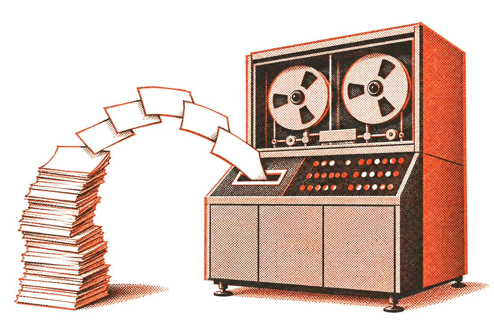
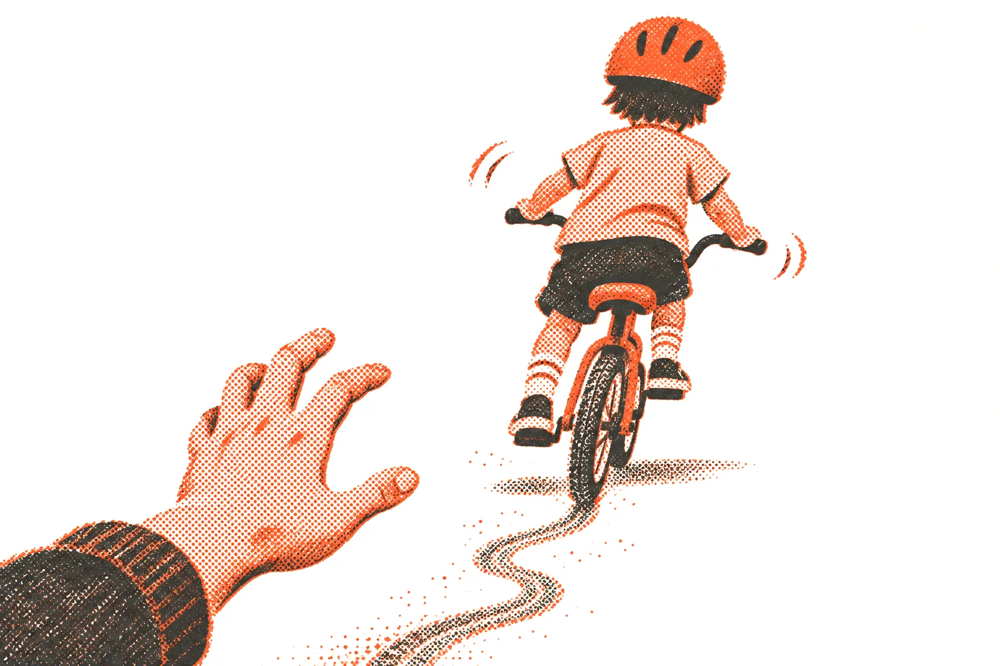
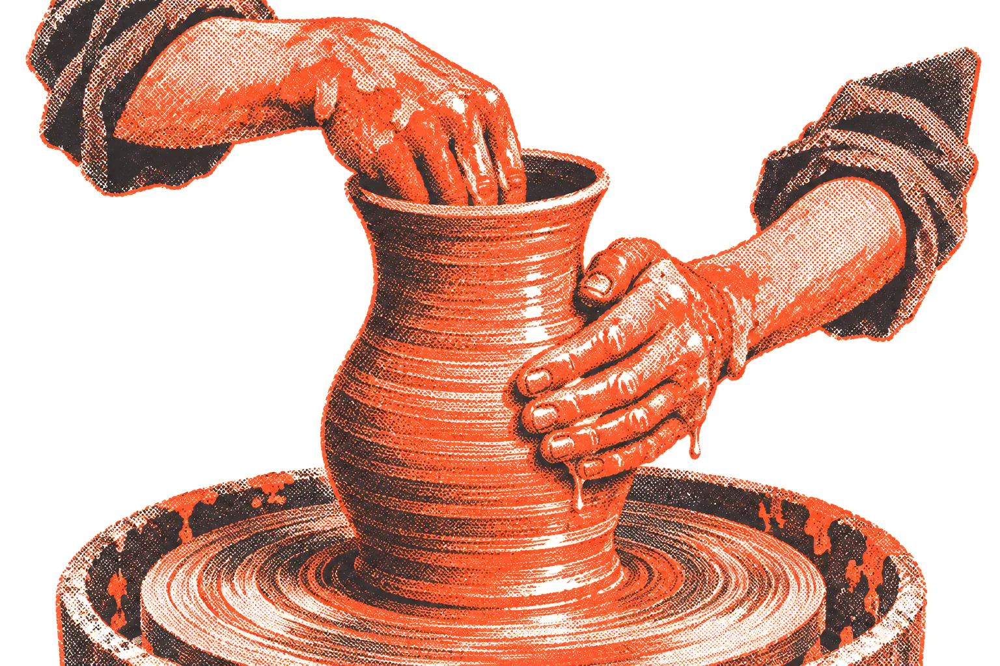
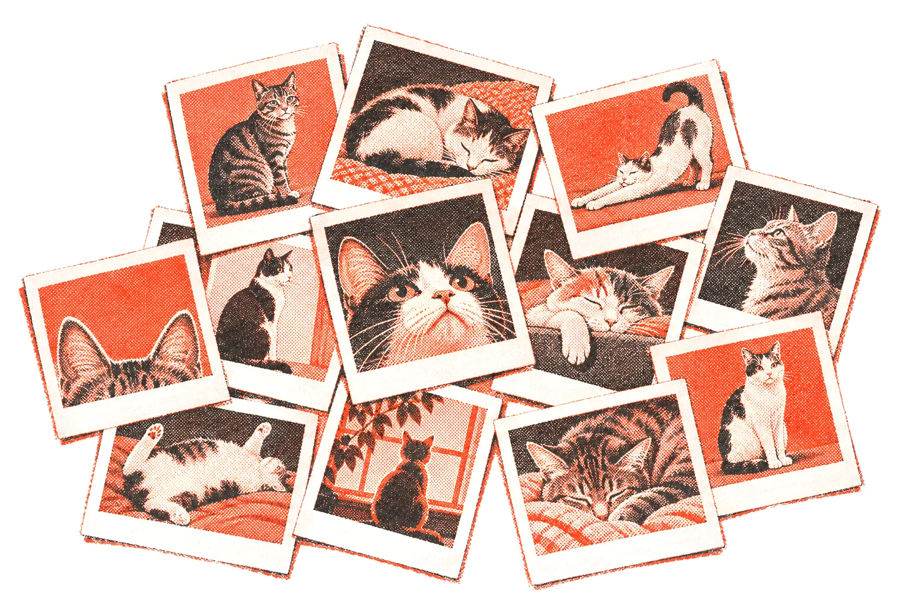
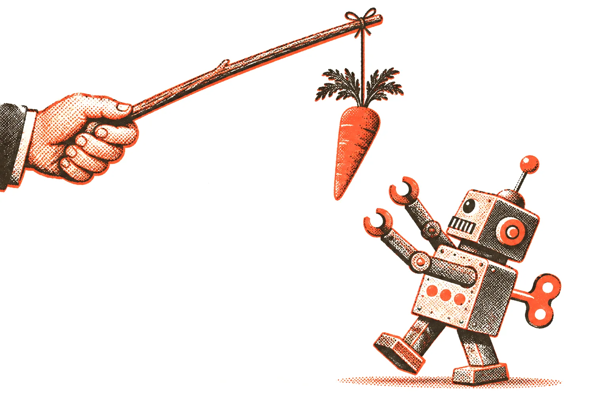
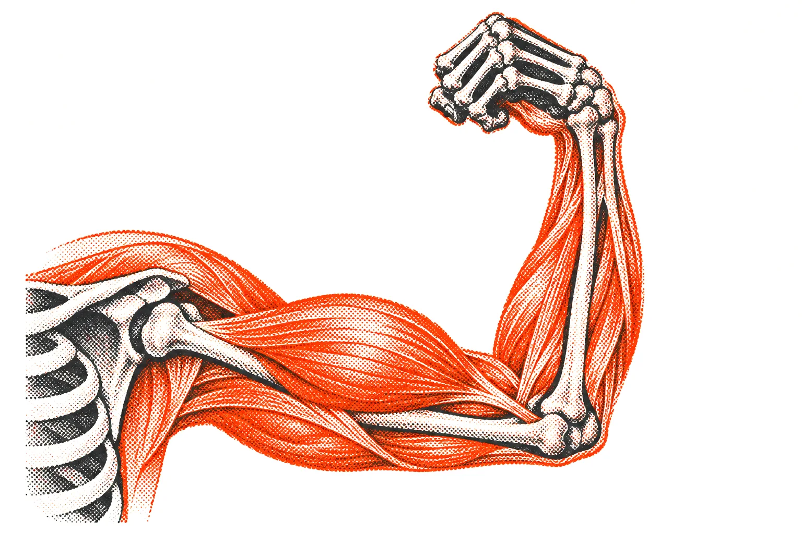

생존을 위한 최소한의 AI 교양 PART 1 기계는 정말 인간처럼 생각할 수 있을까?

IF 규칙을 전부 넣는다 THEN 지능이 된다 ?
아이에게 자전거 타는 법을 가르칠 때를 떠올려 보세요

“페달을 밟기 전에 먼저 균형을 잡아.”
“핸들은 너무 세게 잡지 말고,”
“속도가 붙으면 발을 떼면 안 돼.”
“넘어질 것 같으면 브레이크를 잡으면서
한쪽 발을 땅에 딛어.”
아이는 규칙을 외워서 타는 게 아닙니다. 수십 번의 시행착오를 몸으로 겪으면서 스스로 균형 잡는 법을 터득한 거죠.
시행착오 — 넘어진 자리마다 ✕ · 바퀴 자국은 개념을 보여 주는 그림입니다
규칙 기반사람이 정한 규칙대로 움직이는 AI
vs머신러닝수많은 시행착오를 통해 혼자 학습하는 AI
1960년대 · 컴퓨터가 인간의 일을 조금씩 대신하기 시작할 무렵
혹은 전문가 시스템 — 인공지능의 소박한 출발점
전문가에게 묻습니다. “어떤 상황에서 어떤 판단을 내리십니까?”
그 답을 IF-THEN(만약-그렇다면) 형태로 코딩합니다.
IF 만약
THEN 그렇다면
1970년대 · 미국 스탠퍼드 대학교 · 의료 전문가 시스템
MYCIN — 항생제 이름에 흔히 붙는 접미사 ‘-mycin’에서
의사 입력
의사 입력
⇒ 가능한 원인균을 추론하고,
적절한 항생제와 투여량까지 제안
질문을 순서대로 던지면 의사가 답을 입력합니다 — 진료 과정과 닮은 방식
450약 450개의 IF-THEN 규칙만으로
감염성 질환을 진단했습니다
당시 일반 의사들의 평균을 뛰어넘고, 전문의보다 높거나 비슷한 수준.
그럼에도 — 마이신은 실제 병원에서 사용되지 못했습니다
당시 의료계의 물음“기계의 판단을 믿고
환자에게 약을 처방할 수
있느냐”
IF 조건 THEN 진단 ( 확신도 )
이 진단이 맞을 가능성 70%
규칙마다 0에서 1 사이의 값을 붙였습니다. 오늘날 AI가 결과와 함께 ‘신뢰도’를 보여 주는 방식의 원조입니다. 손잡이의 값은 예시입니다.
기업 현장에서, 그리고 우리 일상에서
연간4,000만 달러
비용을 절감하며 AI의 실질적 가치를 증명했습니다아직 기록이 없습니다
은행의 대출 심사도 마찬가지입니다. 규칙이 명확하기 때문에 결과를 투명하게 설명할 수 있고,
사람이 직접 확인하고 추적할 수 있다는 것이 이 방식의 큰 장점입니다.
1980년대 후반 · 치명적인 한계 ① 끝없는 예외
0/ 2마리 정답
한계 ② 더 근본적인 문제 · 암묵지 Tacit Knowledge
오랜 경험을 가진 의사에게 묻습니다. “왜 그 진단을 내리셨나요?”

IF
THEN
타자기가 쓰다 지우는 문장은 책의 사례를 바탕으로 지어낸 예시입니다.
무용지물“우리는 말할 수 있는 것보다
더 많은 것을 알고 있다.”
— 마이클 폴라니, 1958년 · 암묵지를 처음 제안한 과학철학자
형식지교과서나 매뉴얼처럼 글로 적어 누구에게든 전달할 수 있는 지식
암묵지경험과 반복을 통해서만 체득할 수 있는 지식
한계 ③ 유지보수 · 규칙이 수천, 수만 개로 불어나면
규칙 하나를 고칠 때 다른 어떤 규칙과 충돌하는지 파악하기가 점점 어려워집니다. 거대하게 쌓아 올린 벽돌탑처럼요.
뺀 규칙0함께 무너진 규칙0
아무 벽돌이나 하나 눌러서 빼 보세요.
규칙 사이의 숨은 의존 관계는 시연용으로 매번 무작위로 정합니다연구자들은 발상을 바꿨습니다 · 머신러닝(기계학습)의 등장

스팸 필터의 진화 · 같은 메일, 두 개의 필터
사람이 직접 써 넣은 규칙
틀린 판정 0통
1일째오늘 온 메일 네 통
버튼을 눌러 두 필터에 같은 메일을 넣어 보세요.
예시 메일 16통을 보고 스스로 찾은 단서
틀린 판정 0통
어떻게 배울 것인가 ① 지도 학습 Supervised Learning
선생님이 고양이 사진 1만 장에 ‘고양이’라고 정답(라벨)을 붙여 주면, AI가 그 사진들에서 공통된 특징을 찾아 학습합니다. 예제 문제와 풀이를 함께 주는 셈이죠.
오늘날 우리가 쓰는 AI 대부분이 이 방식으로 만들어집니다.
찍을 예제의 정답을 고르고, 오른쪽 판을 누르세요
어떻게 배울 것인가 ② 비지도 학습 Unsupervised Learning
정답 없이 데이터만 주면, AI가 스스로 숨겨진 패턴이나 구조를 찾아냅니다.
몇 묶음으로 나눌까요?
점 하나가 시청자 한 명입니다. 판을 눌러 점을 더 찍을 수도 있어요.
어떻게 배울 것인가 ③ 강화 학습 Reinforcement Learning
AI가 좋은 결과를 냈을 때 보상을, 나쁜 결과를 냈을 때 감점을 주는 방식입니다. 당근과 채찍으로 동물을 훈련하는 것과 비슷한 원리죠.

…
마음속으로 동작 하나를 정하고, 로봇이 그 동작을 했을 때만 당근을 주세요. ↑ 당근 · ↓ 채찍
훈련 0번
밴딧 방식의 아주 단순한 강화 학습입니다. 로봇은 동작의 이름도, 당신의 속마음도 모릅니다. 보상만 봅니다.머신러닝을 이해하면 보이는 것 · 현실의 AI는 둘을 함께 씁니다
AI는 단순한 연산에도 많은 전력을 소모합니다. 그래서 규칙으로 처리할 수 있는 것을 먼저 걸러 내고, AI의 판단이 꼭 필요한 부분만 정제해서 넘깁니다.

2장을 덮으며 — 다시, 처음의 질문